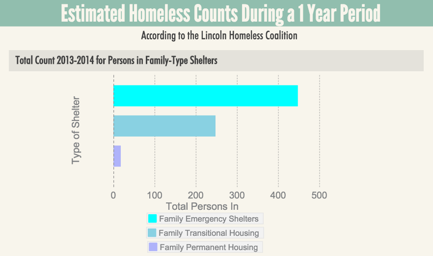

As the economy continues to recover from the 2008 recession, homelessness continues to be an issue. Although the Nebraska homelessness average is down about 3% statewide as you can see in the chart below, Lincoln's homeless problem is only increasing.
Lincoln's homeless population has steadily risen. A study done by the Lincoln Homeless Coalition shows that 53% of Lincoln homeless live in transitional housing, 36% live in emergency shelter, and the remaining 11% live completely unsheltered.
The below charts were created to illustrate the afformentiioned study, they only show the number of sheltered homeless people.

It's hard to say if the decline in Lincoln's unemployment rate (which was 2.1% as of April 2015) will help see a change in the number of homeless. Luckily Lincoln, Nebraska has quite a few resources that are very accessible for those who are in need, listed below.
People's City Mission
Services:
Christian Ministry: shelter, food, clothing, counseling. Emergency Shelter: overnight shelter, 3 meals a day, shower and laundry.
Location:
110 Q Street
Contact:
402-475-1303